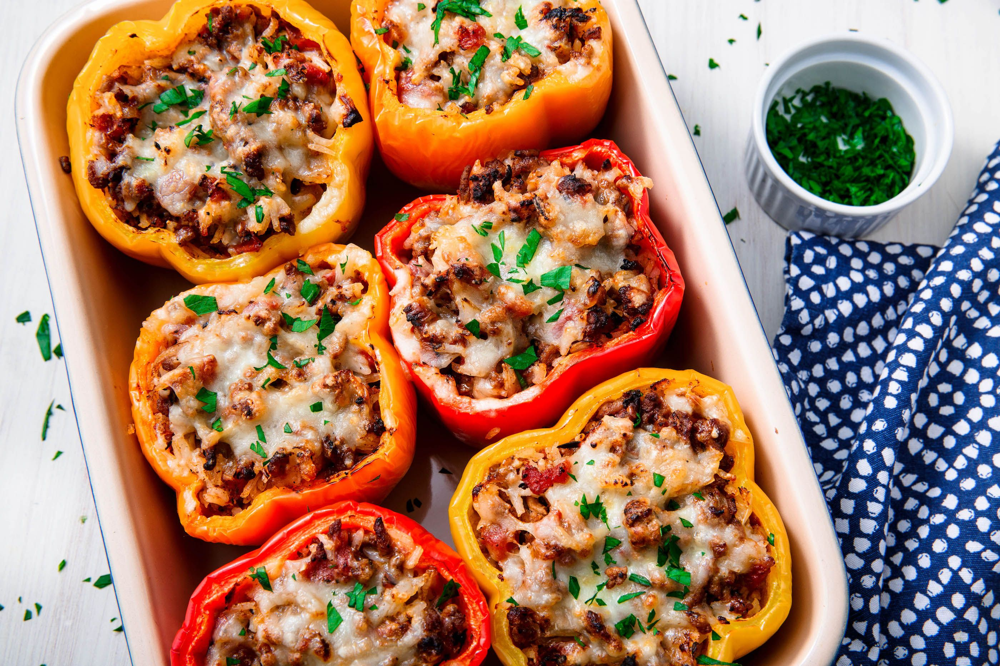

Stuffed Bell Peppers

Description
Green bell peppers stuffed with a mixture of rice, textured vegetable protein, cheese and tomato sauce. Omit the cheese for a vegan variation. Serve with additional tomato sauce, if desired.
Ingredients
- ½ cup uncooked white rice
- ¾ cup water
- 4 green bell peppers
- 1 onion, chopped
- 4 tablespoons olive oil
- 8 ounces textured vegetable protein
- 2 tablespoons chopped fresh parsley
- 2 cups tomato sauce
- 4 ounces shredded mozzarella cheese
- salt to taste
- ground black pepper to taste
Steps
- Combine rice and water in a small saucepan. Bring to a boil, reduce heat to low, and simmer for about 15 minutes.
- Preheat oven to 400 degreed F (205 degrees C).
- Cut tops off peppers, seed insides, and arrange peppers in a large baking dish. Chop usable portion of the tops.
- Heat oil in a large skillet over medium heat. Saute chopped peppers and onions in oil until soft. Stir in textured vegetable protein and parsley. Reduce heat to low, and continue cooking for 5 minutes. Mix in cooked rice and 1 1/5 cups tomato sauce. Season to taste with salt and pepper. Spoon the mixture into the pperps, and top each with remaining tomato sauce.
- Cover, and bake about 45 minutes. Uncover, top each pepper with mozzarella cheese, and bake until cheese is melted.